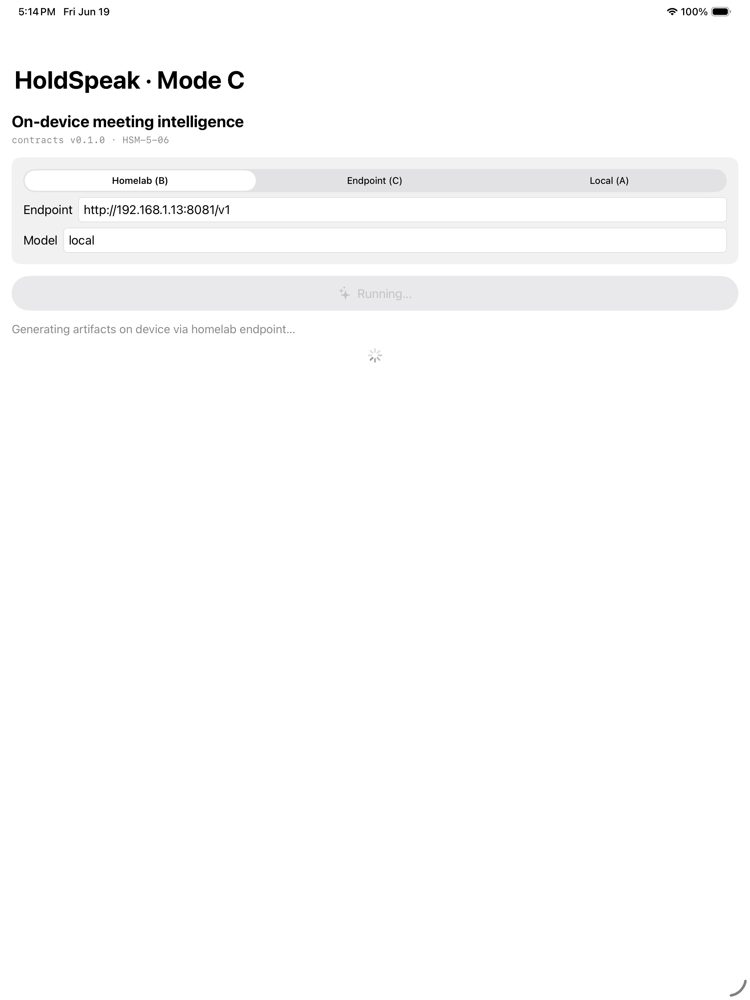
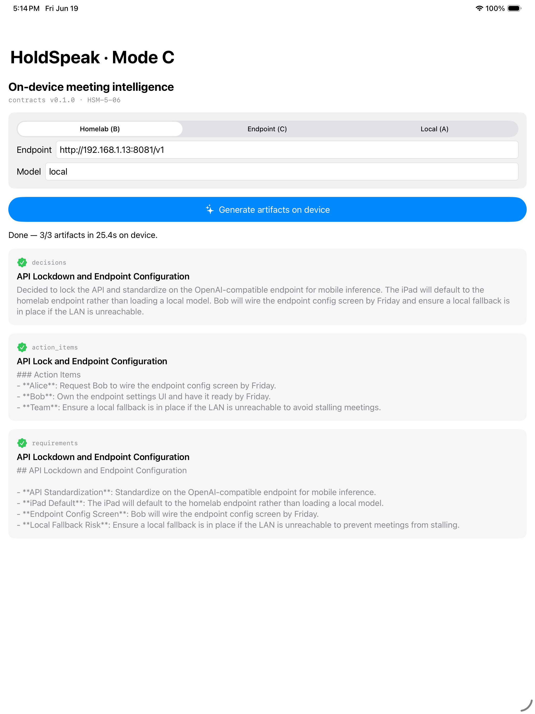

One copilot, two inference modes
Every meeting runs behind one swappable seam — pick where the model lives.
Mode A on-device · llama.cpp + GGUF
Mode B/C your endpoint · OpenAI-compatible
The first mobile runtime of the HoldSpeak ecosystem — meeting intelligence on iPad and iPhone, fully local or against your own endpoint. Below is the real thing: a meeting turned into decisions, actions, and requirements on device, captured straight off the simulator.


Real capture · iPad Pro (M5) simulator · the shipped Mode-C runtime · live OpenAI-compatible endpoint. No mockups.
Every meeting runs behind one swappable seam — pick where the model lives.
The active profile measurably reshapes what gets extracted.
Decisions · Action items · Risks · Requirements · ADRs · Summaries — propose-only.
Snapshot → queue → reconcile. Offline-safe; conflicts surfaced, never lost.
Sideload a GGUF from Files, or pull one from Hugging Face. Never bundled.
Nothing leaves the device unless you point it at an endpoint — shown by an honest egress badge.